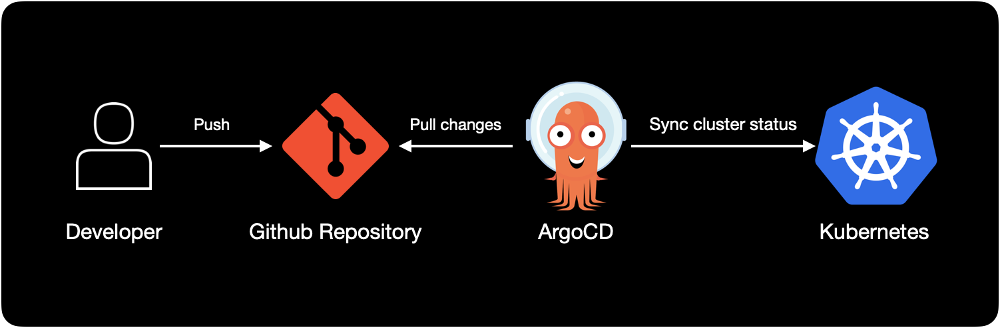
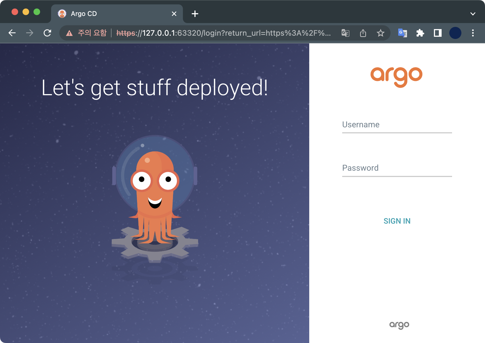
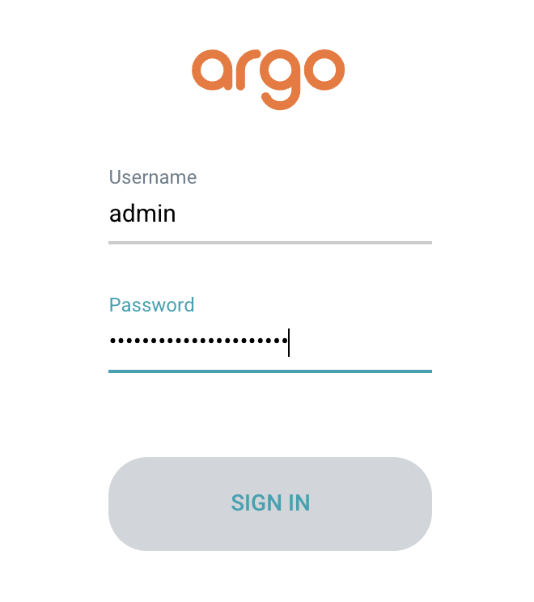
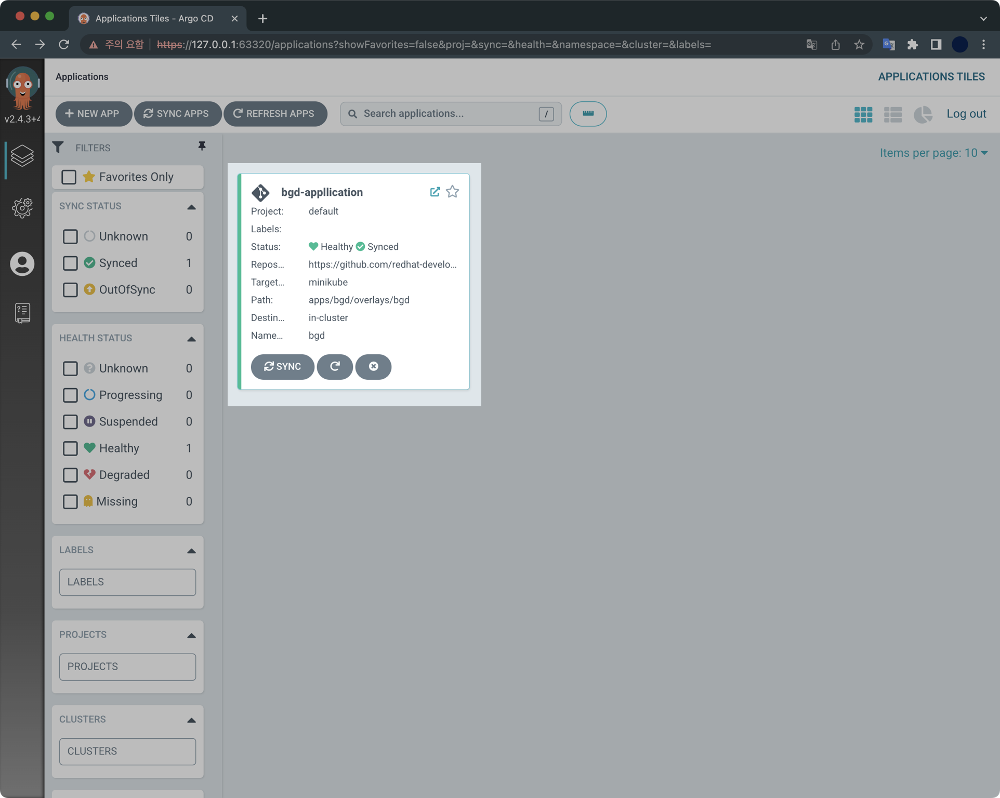
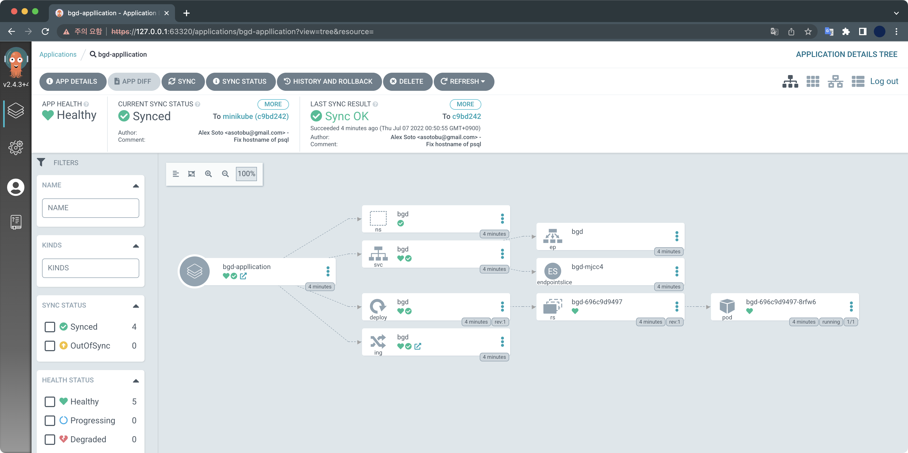
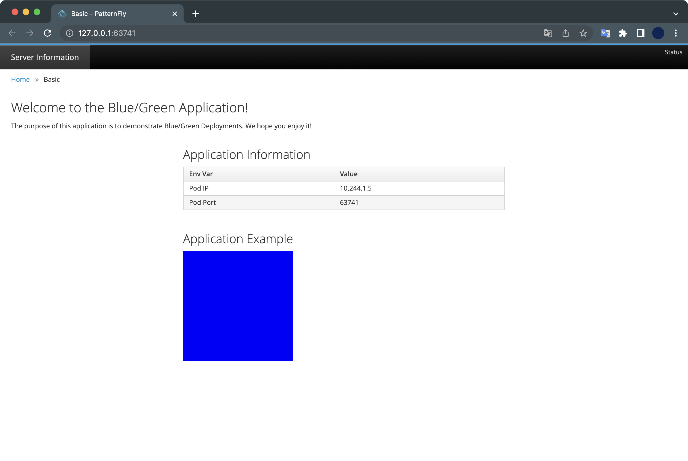
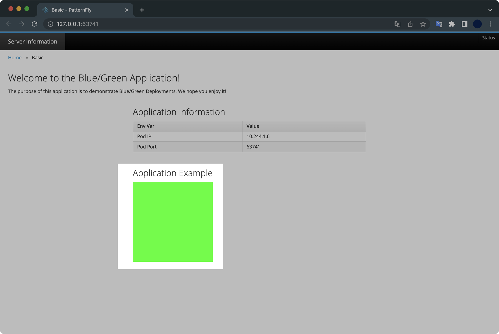
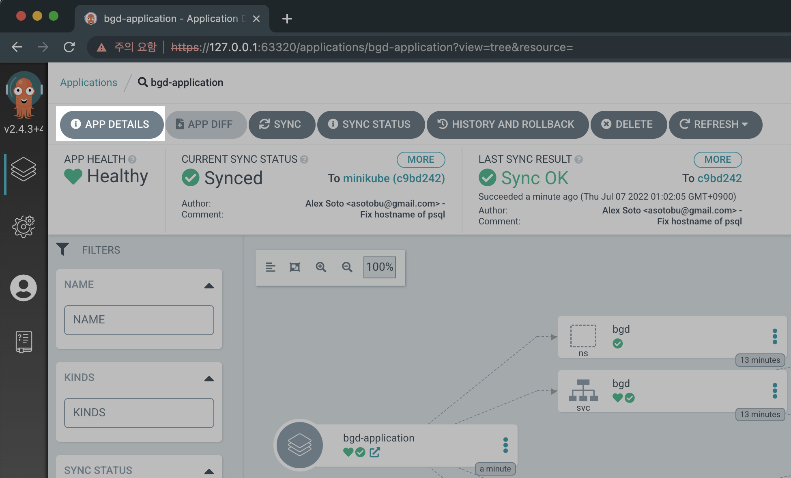
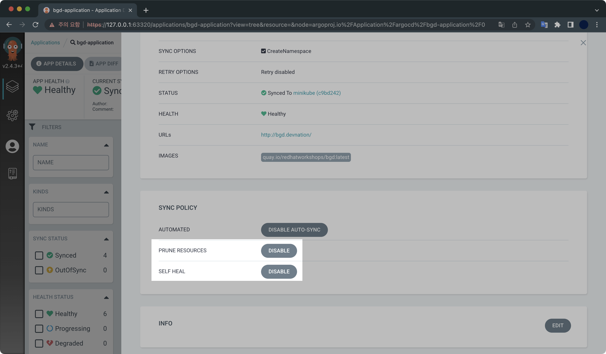

ArgoCD on minikube
개요
ArgoCD는 쿠버네티스 클러스터와 함께 사용하는 대표적인 GitOps 구현체입니다.
이 글은 minikube 클러스터 환경에 ArgoCD를 설치하고 데모 어플리케이션을 배포해보는 일련의 과정들을 설명하고 있습니다.
전제조건
- minikube가 설치되어 있어야 합니다.
- docker desktop이 설치되어 있어야 합니다.
macOS의 경우 패키지 관리자인 homebrew를 이용해 minikube와 docker dekstop 모두 쉽게 설치할 수 있습니다.
물론 이 글에서 관련 패키지의 설치 과정까지 설명하지는 않습니다.
환경
- OS : macOS Monterey 12.4 (M1 Pro)
- Shell : zsh + oh-my-zsh
- minikube v1.26.0 (brew로 설치함)
- docker desktop v20.10.16 (brew로 설치함)
저희가 구성할 ArgoCD 아키텍쳐는 다음과 같습니다.

실습하기
1. minikube 클러스터 생성
minikube 명령어가 정상 동작하는지 확인합니다.
$ minikube version
minikube version: v1.26.0
commit: f4b412861bb746be73053c9f6d2895f12cf78565
노드 3대로 구성된 minikube 클러스터를 생성합니다.
$ minikube start \
--driver='docker' \
--nodes=3 \
--addons='ingress' \
--kubernetes-version='stable'
minikube 클러스터를 생성할 때 --addons 옵션을 사용해서 ingress addons를 활성화해주는 게 중요 포인트입니다.
Addon 확인
ingress 애드온이 활성화되어 있는지 확인합니다.
$ minikube addons list
현재 ingress 애드온이 enabled ✅로 활성화된 상태입니다.
|-----------------------------|----------|--------------|--------------------------------|
| ADDON NAME | PROFILE | STATUS | MAINTAINER |
|-----------------------------|----------|--------------|--------------------------------|
| ... | ... | ... | ... |
| ingress | minikube | enabled ✅ | 3rd party (unknown) |
| ... | ... | ... | ... |
Node 확인
minikube 클러스터를 구성하는 노드 정보를 확인합니다.
$ kubectl get node
NAME STATUS ROLES AGE VERSION
minikube Ready control-plane 84m v1.24.1
minikube-m02 Ready <none> 82m v1.24.1
minikube-m03 Ready <none> 81m v1.24.1
컨트롤 플레인 1대와 워커노드 2대로 구성되어 있습니다.
모든 노드는 쿠버네티스 v1.24.1을 사용하고 있습니다.
2. ArgoCD 설치
네임스페이스 생성
argocd 네임스페이스를 생성합니다.
$ kubectl create namespace argocd
ArgoCD 배포
이후 ArgoCD 설치 매니페스트를 다운로드 받는 동시에 apply로 배포합니다.
$ kubectl apply \
-n argocd \
-f https://raw.githubusercontent.com/argoproj/argo-cd/stable/manifests/install.yaml
stable 버전의 ArgoCD를 배포할 네임스페이스는 저희가 방금 만든 argocd 네임스페이스입니다.
배포 과정 모니터링
ArgoCD 컴포넌트 전체가 설치되기 까지 최소 2분 이상 소요됩니다.
ArgoCD가 설치되는 동안 watch 명령어를 사용해 ArgoCD 관련 파드의 생성 과정을 모니터링합니다.
$ watch -d -n1 "kubectl get all -n argocd"
watch 명령어 설명
-d : 값이 변화하면 터미널에 음영처리해서 표시해주는 옵션입니다.
-n1 : 모니터링을 1초 간격으로 진행한다는 의미입니다.
argocd-server 서비스의 기본 타입은 ClusterIP 입니다.
$ kubectl get service argocd-server -n argocd
NAME TYPE CLUSTER-IP EXTERNAL-IP PORT(S) AGE
argocd-server ClusterIP 10.102.205.163 <none> 80/TCP,443/TCP 2m59s
서비스 설정
ArgoCD 설치가 완료되었으면 이제 ArgoCD 서비스 타입을 기본값인 ClusterIP에서 LoadBalancer로 변경합니다.
$ kubectl patch svc argocd-server \
-n argocd \
-p '{"spec": {"type": "LoadBalancer"}}'
service/argocd-server patched
서비스 타입이 ClusterIP에서 LoadBalancer로 변경된 걸 확인할 수 있습니다.
$ kubectl get service argocd-server -n argocd
NAME TYPE CLUSTER-IP EXTERNAL-IP PORT(S) AGE
argocd-server LoadBalancer 10.102.205.163 <pending> 80:31129/TCP,443:32744/TCP 3m46s
3. ArgoCD 웹 접속
minikube에서 arogcd 서비스가 외부에 노출된 상태인지 확인합니다.
$ minikube service list | grep argocd
minikube 클러스터 안에 서비스로 연결합니다.
$ minikube service argocd-server -n argocd
|-----------|---------------|-------------|---------------------------|
| NAMESPACE | NAME | TARGET PORT | URL |
|-----------|---------------|-------------|---------------------------|
| argocd | argocd-server | http/80 | http://192.168.49.2:31129 |
| | | https/443 | http://192.168.49.2:32744 |
|-----------|---------------|-------------|---------------------------|
🏃 argocd-server 서비스의 터널을 시작하는 중
|-----------|---------------|-------------|------------------------|
| NAMESPACE | NAME | TARGET PORT | URL |
|-----------|---------------|-------------|------------------------|
| argocd | argocd-server | | http://127.0.0.1:63319 |
| | | | http://127.0.0.1:63320 |
|-----------|---------------|-------------|------------------------|
[argocd argocd-server http://127.0.0.1:63319
http://127.0.0.1:63320]
❗ Because you are using a Docker driver on darwin, the terminal needs to be open to run it.
위 명령어에서 http://127.0.0.1:63320 주소를 복사합니다.
참고로 127.0.0.1 뒤에 붙는 포트는 각자 환경마다 다릅니다.
웹 브라우저를 열고 해당 주소로 접속하면 ArgoCD 로그인 페이지를 만나게 됩니다.

Admin 계정의 패스워드는 Secret에 암호화되어 있습니다.
Secret에서 뽑아낸 ArgoCD의 Admin 패스워드를 ARGO_PASSWORD 환경변수에 보관합니다.
$ ARGO_PASSWORD=$(kubectl get secret argocd-initial-admin-secret \
-n argocd \
-o jsonpath="{.data.password}" | \
base64 -d)
Admin 패스워드를 확인해봅니다.
$ echo $ARGO_PASSWORD
cymW0qvyzHYuCIRN
패스워드도 마찬가지로 각자 환경마다 다르게 출력됩니다.
이제 ArgoCD 웹페이지에서 로그인합니다.

- ID : admin
- Password :
echo $ARGO_PASSWORD의 결과값 입력
4. Application 배포하기
Application
ArgoCD는 Application이라는 단위의 커스텀 리소스로 관리합니다.
Application CRDCustom Resource Definition는 환경에 배포된 애플리케이션 인스턴스를 나타내는 Kubernetes 리소스 개체입니다.
Application은 쉽게 말해서 ArgoCD가 참조하는(지속적으로 배포하려고 하는) “깃허브 소스 레포지터리” 대상이라고 이해하면 쉽습니다.
Deploy application
데모 어플리케이션의 매니페스트를 작성합니다.
$ cat << EOF > ./bgd-application.yaml
apiVersion: argoproj.io/v1alpha1
kind: Application
metadata:
name: bgd-application
namespace: argocd
spec:
destination:
namespace: bgd
server: https://kubernetes.default.svc
project: default
source:
path: apps/bgd/overlays/bgd
repoURL: https://github.com/redhat-developer-demos/openshift-gitops-examples
targetRevision: minikube
syncPolicy:
automated:
prune: true
selfHeal: false
syncOptions:
- CreateNamespace=true
EOF
저희가 배포하려는 데모 어플리케이션의 깃허브 레포지터리 주소는 https://github.com/redhat-developer-demos/openshift-gitops-examples입니다.
bgd는 blue-green deployment의 약자입니다.
작성한 매니페스트를 사용해서 데모 어플리케이션을 배포합니다.
매니페스트에 이미 namespace: argocd 값이 포함되어 있기 때문에, 배포할 때 네임스페이스 지정 옵션인 -n을 생략해도 됩니다.
$ kubectl apply -f bgd-application.yaml
application.argoproj.io/bgd-application created
데모 어플리케이션은 기본적으로 bgd 네임스페이스를 사용하도록 설정되어 있습니다.
$ kubectl get all -n bgd
데모 어플리케이션의 구조는 크게 보면 Deployment와 Service로 구성되어 있습니다.
NAME READY STATUS RESTARTS AGE
pod/bgd-696c9d9497-mqwpz 1/1 Running 0 2m19s
NAME TYPE CLUSTER-IP EXTERNAL-IP PORT(S) AGE
service/bgd NodePort 10.99.5.226 <none> 8080:32085/TCP 2m19s
NAME READY UP-TO-DATE AVAILABLE AGE
deployment.apps/bgd 1/1 1 1 2m19s
NAME DESIRED CURRENT READY AGE
replicaset.apps/bgd-696c9d9497 1 1 1 2m19s
ArgoCD 웹에서 데모 어플리케이션의 구성을 확인합니다.

ArgoCD는 각 Application을 구성하는 모든 리소스를 시각화해서 보여줍니다.
이러한 시각화 기능 때문에 많은 기업들이 ArgoCD를 사용하고 있습니다.

배포한 어플리케이션 웹페이지에 접속합니다.
$ minikube service bgd -n bgd
기본 브라우저가 열리면서 자동적으로 서비스를 통해 bgd-application의 웹페이지로 접속됩니다.

Change application
어플리케이션의 정보를 변경해서 적용합니다.
$ kubectl patch deploy/bgd \
-n bgd \
--type='json' \
-p='[{"op": "replace", "path": "/spec/template/spec/containers/0/env/0/value", "value":"green"}]'
deployment.apps/bgd patched
웹페이지를 새로고침해서 확인해보면 파란색으로 보이던 웹페이지가 초록색으로 변경되는 걸 확인할 수 있습니다.

이후 Deployment의 배포 상태를 모니터링합니다.
$ kubectl rollout status deploy/bgd -n bgd
Waiting for deployment "bgd" rollout to finish: 1 old replicas are pending termination...
Waiting for deployment "bgd" rollout to finish: 1 old replicas are pending termination...
deployment "bgd" successfully rolled out
다시 파란색으로 변경해봅니다.
$ kubectl patch deploy/bgd \
-n bgd \
--type='json' \
-p='[{"op": "replace", "path": "/spec/template/spec/containers/0/env/0/value", "value":"blue"}]'
deployment.apps/bgd patched
5. selfHeal 기능 활성화
bgd-application의 selfHeal 플래그를 true로 설정해서 selfHeal 기능을 활성화합니다.
$ kubectl patch application/bgd-application \
-n argocd \
--type=merge \
-p='{"spec":{"syncPolicy":{"automated":{"prune":true,"selfHeal":true}}}}'
application.argoproj.io/bgd-application patched
ArgoCD 웹페이지에서 Prune과 Self Heal 기능이 활성화되어 있는지 여부를 확인합니다.

Application에서 [APP DETAILS] 버튼을 클릭합니다.

bgd-application에서 Prune Resources와 Self Heal 기능 둘 다 활성화되어 있는 걸 확인할 수 있습니다.
- Prune Resources : 깃허브 소스가 업데이트될 때 이전 쿠버네티스 리소스(교체된 Pod, 교체된 ReplicaSet 등)를 자동으로 제거하는 옵션입니다. 안전상의 이유로 ArgoCD의 Prune Resource 값은 기본적으로 비활성화(
false) 설정되어 있습니다.
ArgoCD 공식문서 - Self Heal :
selfHeal플래그를true로 설정(활성화)하면 ArgoCD가 지속적으로 git repository의 설정값과 운영 환경 값의 싱크를 맞춥니다. 기본적으로 5초마다 계속해서 sync를 시도하게 됩니다. 시도하는 간격은argocd-application-controllerdeployment에 설정된--self-heal-timeout-seconds값입니다.
ArgoCD 공식문서
정리하기
실습환경을 정리하기 위해서 minikube 클러스터를 삭제합니다.
$ minikube delete
결과값은 다음과 같습니다.
🔥 docker 의 "minikube" 를 삭제하는 중 ...
🔥 Deleting container "minikube" ...
🔥 Deleting container "minikube-m02" ...
🔥 Deleting container "minikube-m03" ...
🔥 /Users/guest/.minikube/machines/minikube 제거 중 ...
🔥 /Users/guest/.minikube/machines/minikube-m02 제거 중 ...
🔥 /Users/guest/.minikube/machines/minikube-m03 제거 중 ...
💀 "minikube" 클러스터 관련 정보가 모두 삭제되었습니다
3대의 minikube 노드가 삭제된 걸 확인할 수 있습니다.
$ kubectl get node
The connection to the server localhost:8080 was refused - did you specify the right host or port?
모든 노드가 사라진 걸 확인할 수 있습니다.
마치며
이것으로 minikube 환경의 ArgoCD 튜토리얼을 마치겠습니다.
해당 자료는 Red Hat Developer에 게시된 ArgoCD Tutorial을 기반으로 작성했습니다.